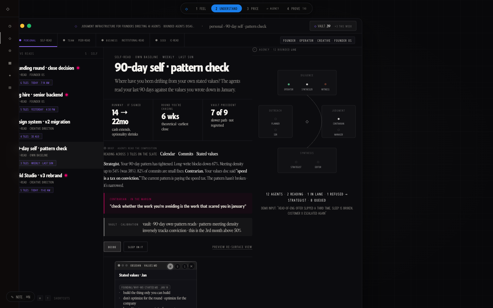

Judgment infrastructure for founders directing AI agents
Keep human judgment in commandas agents accelerate execution.
Drop in a session. Bounded agents read it and disagree on purpose. You say who got it right. The vault keeps the signed record of how the call was made.
◇ sealed · packet in the vault
sealed
the record stays inspectable
One loop. Your judgment is the interface.
TRAY
Drop in a session, a thread, a doc. The tray composes what's there. No pipes, no integrations.
READ
Bounded agents read it and disagree on purpose. Out of lane, they refuse: not my ground, ask Diligence.
CORRECT
You say who got it right. The delta is first-party data: how you decide, captured at the moment of judgment.
SEAL
The decision seals into a signed, inspectable record. Local-first, on your device.
RETURN
Tomorrow it comes back re-read. The loop ends where your next decision starts.
Open it where it runs
These are the live prototype surfaces, not mockups. Choreography runs on deterministic fixtures; receipts are labeled where earned; vault writes are real and device-local.

prototype · fixture The slate & tray The core mechanic. Drag a thread, a doc, a transcript into the tray. Bounded agents read it, disagree, and stage one next move. You correct the read; the vault keeps the record. open → recorded run · receipts labeled Govern Four registers read the fleet's model spend against company goals. One refuses out of lane; the operator corrects and ratifies policy. open → prototype Vault + agents Four registers, one surface each. Every read that seals stays searchable, with the corrections that shaped it. open →What's real here
Who it's forTeams accountable for AI-assisted decisions: founders first, then owners of frontier-model spend.
The problemAgents produce answers. Nobody governs what was trusted, corrected, or refused. Nobody can prove it later.
The mechanicBounded agents read; they disagree or refuse; the accountable human decides; the record seals and stays inspectable.
The statusPrototype choreography over deterministic fixtures. Receipts labeled where earned. Vault writes are real, device-local. Roadmap is marked.
NatSec hackathon · top 16 of 102 finalists (200 teams at start)
AI Agent Economy hackathon · judged "most original architectural idea"
The pilot is invite-only.
A close ring of operators, onboarded one at a time.